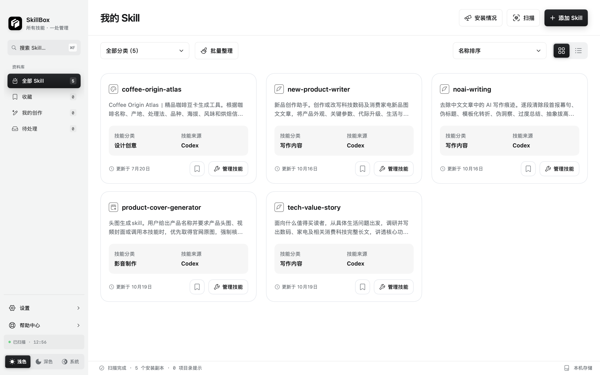
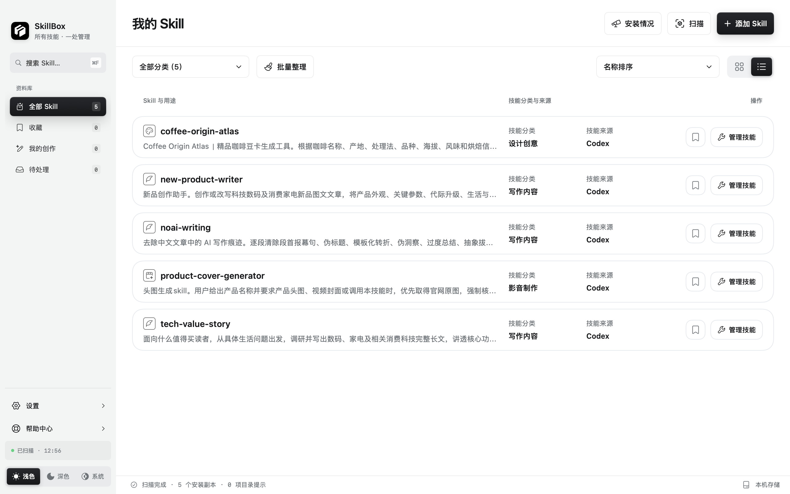
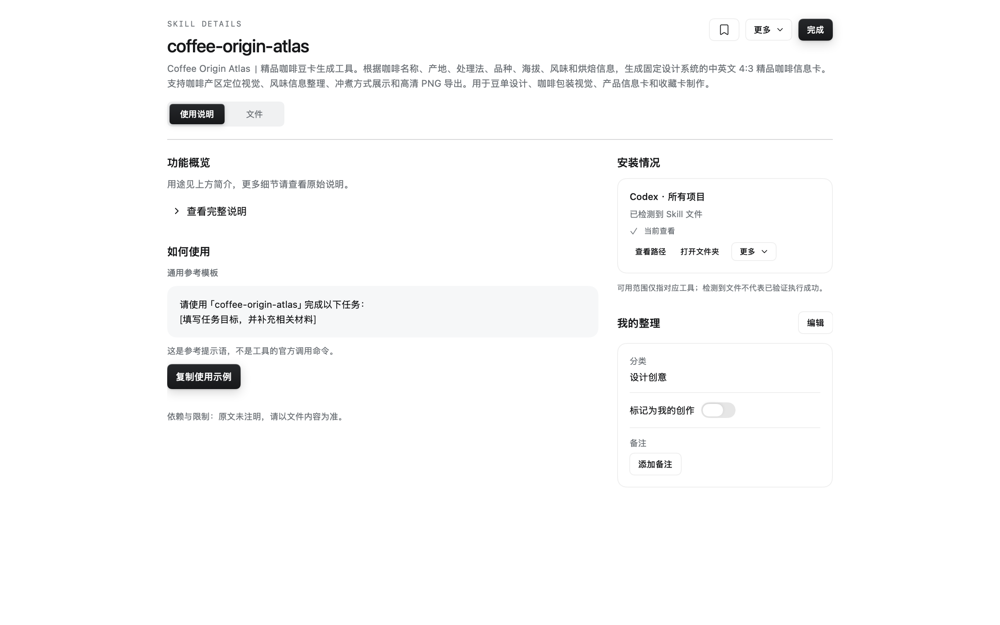

Find the right Skill again
Scan folders you authorize, then search names, descriptions, tags and notes. Switch between cards and a compact list. Favorites, categories and My Creations keep frequently used and self-authored Skills easy to find.
Find, understand and organize the Skill files scattered across your tools. Build a library you can make your own, and take to another Mac.
所有技能，一处管理。把散落在不同工具中的 Skill，整理成自己的技能库。
Scan folders you authorize, then search names, descriptions, tags and notes. Switch between cards and a compact list. Favorites, categories and My Creations keep frequently used and self-authored Skills easy to find.
Read instructions, browse files and inspect installation locations in one structured detail view. Copy a reference task template for use in the appropriate AI tool. SkillBox manages files; it does not run a Skill or an AI model.
Version 2.0 adds clearer scan scope and permission guidance, an installation environment matrix, expected-environment marks and grouped issue analysis. Missing access and content differences are shown separately. Review changes and backups before applying them.
Export selected Skill files together with categories, tags, favorites, notes, creation marks and original environment mappings. On the other Mac, choose authorized destinations and preview conflicts before restoring.
Independent developer Tao builds SkillBox around a practical problem: useful Skills are easy to collect, but harder to find and maintain when they live in different folders and tools. The app brings that local collection into one readable workspace, while keeping file changes explicit.
A small robot character accompanies empty states and guidance. The main workspace stays focused on the actual library, instructions and files. Feedback goes directly to the developer.
独立开发者 Tao 希望让本地 Skill 更容易查找、理解和整理。文件留在用户自己的 Mac 上，扫描范围由用户授权，修改前可以查看冲突和备份。
Native SkillBox 2.0 views, also used to prepare the current App Store screenshots. Click any image to open the original 2560 × 1600 PNG.



Tao · Independent developer
sxt417@163.com